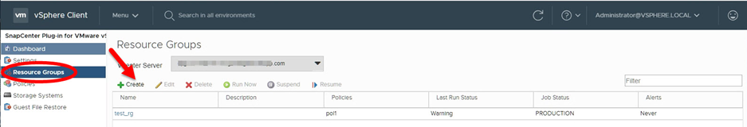

문서 변경 요청
문서 변경 요청 이 페이지 편집
이 페이지 편집 기여하는 방법 자세히 알아보기
기여하는 방법 자세히 알아보기리소스 그룹을 생성합니다
리소스 그룹은 보호할 VM, 데이터 저장소 또는 VVol VM의 컨테이너입니다.
리소스 그룹에는 다음 중 하나가 포함될 수 있습니다.
-
기존 VM 및 데이터 저장소
기존 VM, 기존 SAN 데이터 저장소 및 기존 NAS 데이터 저장소의 모든 조합 기존 VM은 VVOL VM과 결합할 수 없습니다.
-
FlexGroup 데이터 저장소
FlexGroup 데이터 저장소 1개. Spanning FlexGroup 데이터 저장소는 지원되지 않습니다. FlexGroup 데이터 저장소를 기존 VM 또는 데이터 저장소와 결합할 수 없습니다.
-
FlexVol 데이터 저장소
하나 이상의 FlexVol 데이터 저장소. 스패닝 데이터 저장소가 지원됩니다.
-
VVOL VM
하나 이상의 VVol VM. VVOL VM은 기존 VM 또는 데이터 저장소와 결합할 수 없습니다.
-
태그가 있는 VVol VM
지정된 vCenter 태그가 있는 모든 VVol VM 데이터 저장소 또는 기존 VM과 같이 동일한 vCenter 또는 다른 vCenter에서 동일한 태그를 사용하는 다른 엔터티는 지원되지 않습니다. 지정된 태그를 사용하는 VM 목록에 VVOL VM과 기존 VM이 혼합되어 있는 경우 VMware vSphere용 SnapCenter 플러그인은 VVOL VM을 백업하고 기존 VM을 건너뜁니다.
-
폴더의 VVol VM
지정된 단일 VVol 폴더에 있는 모든 VVol. 폴더에 VVOL VM과 기존 VM이 혼합되어 있는 경우 VMware vSphere용 SnapCenter 플러그인은 VVOL VM을 백업하고 기존 VM을 건너뜁니다.
모든 리소스 그룹에 대해 다음을 수행합니다.

|
VMware vCLS(vSphere Cluster Service)를 사용하는 경우 SnapCenter VMware 플러그인 리소스 그룹에 vCLS로 관리되는 VM을 포함하지 마십시오. |
VMware vSphere 4.5 이상용 SnapCenter 플러그인은 ASA 애그리게이트에서 최대 128TB의 대용량 LUN에서 데이터 저장소를 지원합니다. 대규모 LUN의 경우 SnapCenter는 일반 프로비저닝된 LUN만 사용하여 지연 시간을 방지합니다.
|
|
액세스할 수 없는 상태의 VM은 추가하지 마십시오. 액세스할 수 없는 VM이 포함된 리소스 그룹을 생성할 수는 있지만 해당 리소스 그룹의 백업은 실패합니다. |
VVOL VM이 포함된 리소스 그룹을 생성하기 전에 ONTAP Tools for VMware를 구축해야 합니다.
자세한 내용은 을 참조하십시오 "VMware vSphere용 ONTAP 툴".
언제든지 자원 그룹에서 자원을 추가하거나 제거할 수 있습니다.
-
단일 리소스 백업
단일 리소스(예: 단일 VM)를 백업하려면 해당 단일 리소스가 포함된 리소스 그룹을 생성해야 합니다.
-
여러 리소스 백업
여러 자원을 백업하려면 여러 자원을 포함하는 자원 그룹을 만들어야 합니다.
-
MetroCluster 환경의 FlexGroup 볼륨이 포함된 리소스 그룹입니다
ONTAP 9.8 또는 ONTAP 9.9에서 실행 중인 경우 스위치오버 또는 스위치백 이후, MetroCluster 환경에서 리소스 그룹을 백업하기 전에 SnapCenter VMware 플러그인 서비스를 다시 시작하고 SnapMirror 관계를 다시 동기화해야 합니다.
ONTAP 9.8에서는 스위치백 후 백업이 중단됩니다. 이 문제는 ONTAP 9.9에서 해결되었습니다.
-
스냅샷 복사본 최적화
스냅샷 복사본을 최적화하려면 동일한 볼륨과 연결된 VM 및 데이터 저장소를 하나의 리소스 그룹으로 그룹화해야 합니다.
-
백업 정책
백업 정책 없이 리소스 그룹을 생성할 수는 있지만 리소스 그룹에 하나 이상의 정책이 연결된 경우에만 예약된 데이터 보호 작업을 수행할 수 있습니다. 기존 정책을 사용하거나 리소스 그룹을 만드는 동안 새 정책을 만들 수 있습니다.
-
호환성 검사
SnapCenter 리소스 그룹을 만들 때 호환성 검사를 수행합니다.
-
VMware vSphere 웹 클라이언트의 왼쪽 탐색 창에서 * 리소스 그룹 * 을 클릭한 다음 을 클릭합니다
 * 생성 * 을 클릭하여 마법사를 시작합니다.
* 생성 * 을 클릭하여 마법사를 시작합니다.
리소스 그룹을 만드는 가장 쉬운 방법입니다. 그러나 다음 중 하나를 수행하여 하나의 리소스로 리소스 그룹을 만들 수도 있습니다.
-
하나의 VM에 대한 리소스 그룹을 생성하려면 * 메뉴 * > * 호스트 및 클러스터 * 를 클릭한 다음 VM을 마우스 오른쪽 버튼으로 클릭하고 NetApp SnapCenter를 선택한 다음 클릭합니다
* 리소스 그룹 생성 *. -
하나의 데이터 저장소에 대한 리소스 그룹을 생성하려면 * 메뉴 * > * 호스트 및 클러스터 * 를 클릭한 다음 데이터 저장소를 마우스 오른쪽 버튼으로 클릭하고 * NetApp SnapCenter * 를 선택한 다음 을 클릭합니다
* 리소스 그룹 생성 *.
-
-
마법사의 * 일반 정보 및 알림 * 페이지에서 다음을 수행합니다.
이 필드의 경우… 이렇게 하십시오. vCenter Server를 선택합니다
vCenter Server를 선택합니다.
이름
자원 그룹의 이름을 입력합니다. VM, 데이터 저장소, 정책, 백업 또는 리소스 그룹 이름에 %& * $#@! /: *? "<>-[수직 막대];',. 밑줄 문자(_)를 사용할 수 있습니다. 특수 문자가 포함된 VM 또는 데이터 저장소 이름이 잘려서 특정 백업을 검색하기 어렵습니다. 연결 모드에서는 각 vCenter에 별도의 SnapCenter VMware 플러그인 저장소가 있습니다. 따라서 vCenter 전체에서 중복 이름을 사용할 수 있습니다.
설명
자원 그룹에 대한 설명을 입력합니다.
통지
이 리소스 그룹의 작업에 대한 알림을 받으려면 선택합니다. 오류 또는 경고: 오류 및 경고에 대한 알림을 보냅니다. 오류: 오류에 대한 알림만 보냅니다. 항상: 모든 메시지 유형에 대한 알림을 보냅니다. 안 함: 알림을 보내지 않습니다
전자 메일 보낸 사람
알림을 보낼 이메일 주소를 입력합니다.
이메일 전송 대상
알림을 받을 사람의 이메일 주소를 입력합니다. 받는 사람이 여러 명인 경우 쉼표를 사용하여 전자 메일 주소를 구분합니다.
이메일 제목
알림 이메일에 사용할 제목을 입력합니다.
최근 스냅샷 이름입니다
최신 스냅샷 복사본에 접미사 "_Recent"를 추가하려면 이 확인란을 선택합니다. “_Recent” 접미사는 날짜 및 타임스탬프를 대체합니다.

리소스 그룹에 연결된 각 정책에 대해 '-recent' 백업이 생성됩니다. 따라서 여러 정책을 가진 리소스 그룹에는 여러 개의 "최근" 백업이 있습니다. 사용자 지정 스냅샷 형식
스냅샷 복사본 이름에 사용자 지정 형식을 사용하려면 이 확인란을 선택하고 이름 형식을 입력합니다.
-
기본적으로 이 기능은 비활성화되어 있습니다.
-
기본 스냅샷 복사본 이름은 '<ResourceGroup>_<Date-Timestamp>' 형식을 사용합니다. 그러나 $ResourceGroup, $Policy, $HostName, $ScheduleType 및 $CustomText 변수를 사용하여 사용자 지정 형식을 지정할 수 있습니다. 사용자 정의 이름 필드의 드롭다운 목록을 사용하여 사용할 변수와 변수를 사용하는 순서를 선택합니다. $CustomText 를 선택하면 이름 형식은 "<CustomName>_<Date-timestamp>"입니다. 제공된 추가 상자에 사용자 지정 텍스트를 입력합니다. 참고: "_Recent" 접미어도 선택하는 경우 사용자 지정 스냅샷 이름이 데이터 저장소에서 고유한지 확인해야 합니다. 따라서 $ResourceGroup 및 $Policy 변수를 이름에 추가해야 합니다.
-
특수 문자 이름의 특수 문자 이름 필드에 지정된 것과 동일한 지침을 따릅니다.
-
-
Resources * 페이지에서 다음을 수행합니다.
이 필드의 경우… 이렇게 하십시오. 범위
보호할 리소스 유형 선택: * 데이터 저장소(하나 이상의 지정된 데이터 저장소에 있는 기존의 모든 VM) * 가상 머신(개별 기존 또는 VVOL VM, 필드에서 VM 또는 VVol VM이 포함된 데이터 저장소로 이동해야 합니다. * 태그(지정된 단일 VMware 태그가 있는 모든 VVol VM, 목록 상자에 태그를 입력해야 함) * VM 폴더(지정된 폴더의 모든 VVol VM, 팝업 필드에서 폴더가 있는 데이터 센터로 이동해야 합니다.)
데이터 센터
추가할 VM 또는 데이터 저장소 또는 폴더로 이동합니다.
사용 가능한 요소
보호하려는 자원을 선택한 다음 * > * 를 클릭하여 선택 항목을 선택한 요소 목록으로 이동합니다.
다음 * 을 클릭하면 시스템이 먼저 SnapCenter가 관리하고 선택한 리소스가 있는 스토리지와 호환되는지 확인합니다.
'선택한 <resource-name>은(는) SnapCenter와 호환되지 않습니다.'라는 메시지가 표시되면 선택한 리소스가 SnapCenter와 호환되지 않습니다. 을 참조하십시오 [Manage compatibility check failures] 를 참조하십시오.
-
Spanning disks * 페이지에서 여러 데이터 저장소에 걸쳐 VMDK가 여러 개인 VM의 옵션을 선택합니다.
-
항상 모든 스패닝 데이터 저장소 제외[데이터 저장소의 기본값입니다.]
-
항상 모든 스패닝 데이터 저장소를 포함합니다[VM의 기본값입니다.]
-
포함할 스패닝 데이터 저장소를 수동으로 선택합니다
FlexGroup 및 VVOL 데이터 저장소에는 스패닝 VM이 지원되지 않습니다.
-
-
다음 표와 같이 * Policies * 페이지에서 하나 이상의 백업 정책을 선택하거나 생성합니다.
사용 방법 이렇게 하십시오. 기존 정책입니다
목록에서 하나 이상의 정책을 선택합니다.
새로운 정책
-
을 클릭합니다
* 생성 *. -
새 백업 정책 마법사를 완료하여 리소스 그룹 생성 마법사로 돌아갑니다.
연결된 모드에서 목록에는 연결된 모든 vCenter의 정책이 포함됩니다. 리소스 그룹과 동일한 vCenter에 있는 정책을 선택해야 합니다.
-
-
Schedules * 페이지에서 선택한 각 정책에 대한 백업 스케줄을 구성합니다.

시작 시간 필드에 0이 아닌 날짜와 시간을 입력합니다. 날짜는 '일/월/년' 형식이어야 합니다.
Every * 필드에서 일 수를 선택하면 지정된 간격마다 월 1일과 그 이후에 백업이 수행됩니다. 예를 들어 * every 2 days * 옵션을 선택하면 시작 날짜가 짝수인지 홀수인지에 관계없이 1일, 3일, 5일, 7일 등에 백업이 수행됩니다.
각 필드에 내용을 입력해야 합니다. SnapCenter VMware 플러그인은 SnapCenter VMware 플러그인이 구축된 표준 시간대에서 일정을 생성합니다. VMware vSphere GUI용 SnapCenter 플러그인을 사용하여 시간대를 수정할 수 있습니다.
-
요약을 검토하고 * Finish * 를 클릭합니다.
마침 * 을 클릭하기 전에 마법사의 모든 페이지로 돌아가서 정보를 변경할 수 있습니다.
마침 * 을 클릭하면 새 리소스 그룹이 리소스 그룹 목록에 추가됩니다.
백업 중인 VM에 대해 중지 작업이 실패하면 선택한 정책에 VM 정합성이 선택되어 있더라도 백업이 VM 정합성이 보장되지 않음 으로 표시됩니다. 이 경우 일부 VM이 중지되었을 수 있습니다.
호환성 검사 실패 관리
SnapCenter 리소스 그룹을 만들려고 할 때 호환성 검사를 수행합니다.
비호환성 이유는 다음과 같습니다.
-
VMDK는 7-Mode에서 실행 중인 ONTAP 시스템이나 타사 장치에서 지원되지 않는 스토리지에 있습니다.
-
데이터 저장소는 clustered Data ONTAP 8.2.1 이상을 실행하는 NetApp 스토리지에 있습니다.
SnapCenter 버전 4.x는 ONTAP 8.3.1 이상을 지원합니다.
VMware vSphere용 SnapCenter 플러그인은 모든 ONTAP 버전에 대해 호환성 검사를 수행하지 않으며, ONTAP 버전 8.2.1 및 이전 버전에만 적용됩니다. 따라서 항상 을 참조하십시오 "NetApp 상호 운용성 매트릭스 툴(IMT)" SnapCenter 지원에 대한 최신 정보를 확인하십시오.
-
공유 PCI 장치가 VM에 연결되어 있습니다.
-
SnapCenter에서 기본 IP가 구성되지 않았습니다.
-
SnapCenter에 스토리지 VM(SVM) 관리 IP를 추가하지 않았습니다.
-
스토리지 VM이 다운되었습니다.
호환성 오류를 해결하려면 다음 단계를 수행하십시오.
-
스토리지 VM이 실행 중인지 확인합니다.
-
VM이 있는 스토리지 시스템이 VMware vSphere 인벤토리에 대한 SnapCenter 플러그인에 추가되었는지 확인합니다.
-
스토리지 VM이 SnapCenter에 추가되었는지 확인합니다. VMware vSphere 웹 클라이언트 GUI에서 스토리지 시스템 추가 옵션을 사용합니다.
-
NetApp 데이터 저장소와 비 NetApp 데이터 저장소 모두에 VMDK가 있는 스패닝 VM이 있는 경우 VMDK를 NetApp 데이터 저장소로 이동합니다.